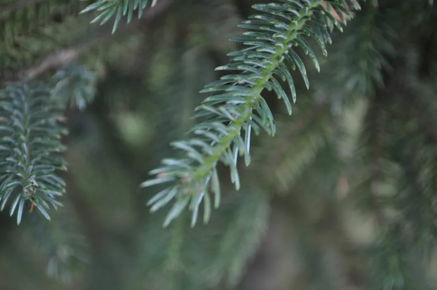

蕨类与裸子植物 · 植物界
丽江云杉 Picea likiangensis

丽江云杉是中国西南高山针叶林的重要树种，树冠塔形、针叶四棱，木材优良，是高原地区的水源涵养树种。
- 分类
- 门裸子植物门纲松纲目松柏目科松科属云杉属
- 栖息环境
- 海拔 2500–4000 m 的高山针叶林，喜冷凉湿润、多云雾气候
- 地理分布
- 中国云南西北部、四川西南部及西藏东南部，中国特有种
- 保护级别
- 暂无评估；高山针叶林建群种，生境需保护
物种志
丽江云杉是松科常绿乔木，高可达 40–50 m，树干通直，树皮灰褐色、鳞片状剥落。小枝有毛，针叶四棱形，螺旋状排列，长 0.6–1.5 cm，表面有气孔带。雌雄同株，球果圆柱形或卵状圆柱形，成熟时褐色或紫褐色，种鳞倒卵形，种子具翅。
丽江云杉是中国特有种，分布于云南西北部、四川西南部及西藏东南部的高山地区，多生于海拔 2500–4000 m 的冷杉林、云杉林中，喜冷凉湿润、云雾较多的气候和酸性土壤。它耐寒、喜湿，是西南高山针叶林的主要建群种之一，对涵养水源、保持水土有重要作用。丽江云杉木材轻软、纹理直，可供建筑、造纸与乐器用材。由于高山生境脆弱，野生资源需合理保护与利用。
形态与习性
- 树高40–50 m
- 针叶四棱形，长 0.6–1.5 cm
- 球果圆柱形，成熟时褐或紫褐
- 生境海拔 2500–4000 m 高山
- 用途建筑、造纸与乐器用材
趣味知识
- 丽江云杉的针叶是四棱形的，摸起来比扁平针叶更硬挺。
- 它是中国西南高山针叶林的主要建群种之一。
- 丽江云杉对涵养水源、保持水土有重要作用。